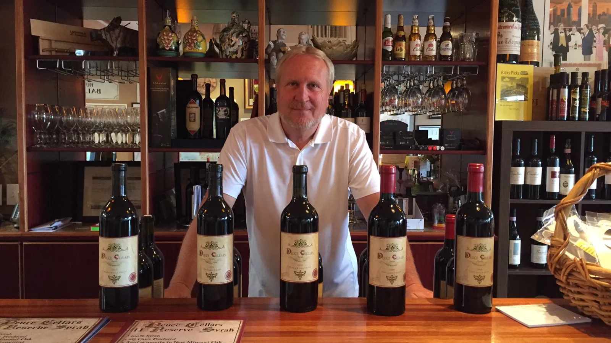
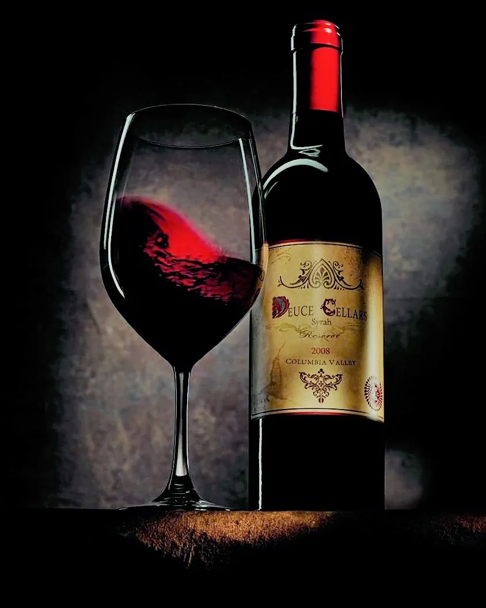
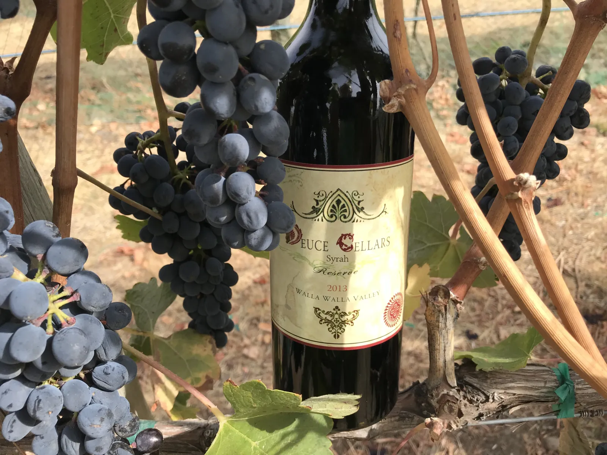

By appointment
Private tastings
Gather six or more and we’ll pour through the vintages with you.

Taste with us
The current release, beside the library.
Private tastings are a chance to taste the 2019 next to older vintages and hear how each one was made. They are by appointment only, for groups of six or more.
Email or call with a few dates that work for your group and we will set it up.

Where to find Deuce
Poured across Oregon.
You’ll find Deuce at more than 50 shops and restaurants, from Portland and wine country to Bend and the coast. It is distributed in Oregon by Foodie Wines, LLC.
Restaurants, retailers and private clubs: contact us for trade pricing and availability.
Contact
Get in touch.
Orders, tastings, trade questions or just to say hello. We answer personally.
The Deuce list
First word on new releases.
Release notes, Deuce Days and library offers, a few times a year.